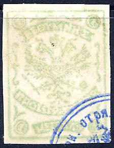
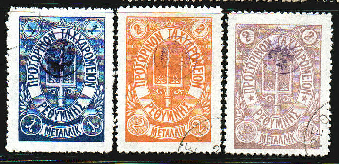

Note: on my website many of the
pictures can not be seen! They are of course present in the
catalogue;
contact me if you want to purchase the catalogue.


1 m green 1 m blue 1 m blue (slightly different design) 1 m violet 2 m black 2 m red 2 m grey 2 m blue 2 m violet 2 m brown
These stamps have a blue or violet circular control overprint (at the corners of four stamps, see above for examples).
Value of the stamps |
|||
vc = very common c = common * = not so common ** = uncommon |
*** = very uncommon R = rare RR = very rare RRR = extremely rare |
||
| Value | Unused | Used | Remarks |
| 1 m green | RR | R | |
| 1 m blue | RRR | RRR | |
| 1 m blue | *** | *** | Slightly different design |
| 1 m violet | RRR | RRR | |
| 2 m black | *** | *** | |
| 2 m red | RR | RR | |
| 2 m grey | RR | RR | |
| 2 m blue | RRR | RRR | |
| 2 m violet | RRR | RRR | |
| 2 m brown | RRR | RRR | |
I've been told that the next stamp is a forgery (by the way, I'm not sure if the above stamps are genuine):
(Reduced size)
Fournier forgeries, as taken from a Fournier Album of Philatelic
Forgeries, reduced sizes. The Fournier forgeries with Latin
inscription have a "V" instead of a "Y" in
"RETYMNO". The Fournier forgeries with Greec
inscription have "O"s instead of "Q"s

Forgeries taken from a Fournier Album.

(Genuine stamps)

(With stars, reduced size)
(With stars, reduced size)
Without stars between inscriptions in the ellipse 1 m red 1 m blue 1 m green 1 m orange 1 m lilac 1 m yellow 1 m black 2 m red 2 m blue 2 m green 2 m orange 2 m lilac 2 m yellow 2 m black 1 g red 1 g blue 1 g green 1 g orange 1 g lilac 1 g yellow 1 g black With stars between inscriptions: 1 m blue 1 m green 1 m red 1 m lilac 2 m blue 2 m green 2 m red 2 m lilac 1 g blue 1 g green 1 g red 1 g lilac
These stamps have perforation 11 1/2. They have a small control overprint in blue or violet.
Value of the stamps |
|||
vc = very common c = common * = not so common ** = uncommon |
*** = very uncommon R = rare RR = very rare RRR = extremely rare |
||
| Value | Unused | Used | Remarks |
| Without stars | |||
| All values except the following | R | R | |
| 1 m black | RR | RR | |
| 1 g black | RR | RR | |
| With stars | |||
| All values | *** | *** | |
Forgeries exist, examples:

If my information is correct, the forgeries can be detected by the leaf ornaments at the right hand side (just above the lower right circle with value); in the forgeries, the most upper leaf is much fatter than in the genuine stamps.
(Without stars, reduced sizes, probably forgeries)